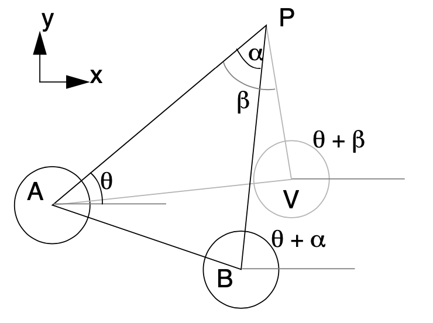
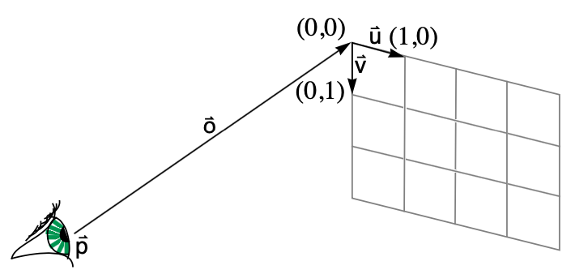

1 Least Squares Problems $\prosedeflabel{first}{m}$ is the slope and $\prosedeflabel{first}{b}$ is the intercept .
Let’s define an energy function $\proselabel{first}{E}$ as follows:
$$\DeclareMathOperator*{\argmax}{arg\,max}
\DeclareMathOperator*{\argmin}{arg\,min}
\begin{align*}
\idlabel{ {"onclick":"event.stopPropagation(); onClickSymbol(this, 'E', 'first', 'def', false, '')", "id":"first-E", "sym":"E", "func":"first", "localFunc":"", "type":"def", "case":"equation"} }{ {\mathit{E}} } & = \sum_{\mathit{i}} {\left( \idlabel{ {"onclick":"event.stopPropagation(); onClickSymbol(this, 'm', 'first', 'use', false, '')", "id":"first-m", "sym":"m", "func":"first", "localFunc":"", "type":"use", "case":"equation"} }{ {\mathit{m}} }\idlabel{ {"onclick":"event.stopPropagation(); onClickSymbol(this, 'x', 'first', 'use', false, '')", "id":"first-x", "sym":"x", "func":"first", "localFunc":"", "type":"use", "case":"equation"} }{ {\mathit{x}} }_{ \mathit{i} } + \idlabel{ {"onclick":"event.stopPropagation(); onClickSymbol(this, 'b', 'first', 'use', false, '')", "id":"first-b", "sym":"b", "func":"first", "localFunc":"", "type":"use", "case":"equation"} }{ {\mathit{b}} } - \idlabel{ {"onclick":"event.stopPropagation(); onClickSymbol(this, 'y', 'first', 'use', false, '')", "id":"first-y", "sym":"y", "func":"first", "localFunc":"", "type":"use", "case":"equation"} }{ {\mathit{y}} }_{ \mathit{i} } \right)}^{2}\\\eqlabel{ {"onclick":"event.stopPropagation(); onClickEq(this, 'first', ['b', 'y', 'x', 'm', 'E'], false, []);"} }{}
\end{align*}
\tag{1}\label{1}$$
$$\DeclareMathOperator*{\argmax}{arg\,max}
\DeclareMathOperator*{\argmin}{arg\,min}
\begin{align*}
\idlabel{ {"onclick":"event.stopPropagation(); onClickSymbol(this, 'g', 'first', 'def', false, '')", "id":"first-g", "sym":"g", "func":"first", "localFunc":"", "type":"def", "case":"equation"} }{ {\mathit{g}} } & = \idlabel{ {"onclick":"event.stopPropagation(); onClickSymbol(this, '∇', 'first', 'use', false, '')", "id":"first-∇", "sym":"∇", "func":"first", "localFunc":"", "type":"use", "case":"equation"} }{ {\textit{∇}} }\idlabel{ {"onclick":"event.stopPropagation(); onClickSymbol(this, 'E', 'first', 'use', false, '')", "id":"first-E", "sym":"E", "func":"first", "localFunc":"", "type":"use", "case":"equation"} }{ {\mathit{E}} }\\\eqlabel{ {"onclick":"event.stopPropagation(); onClickEq(this, 'first', ['E', '∇', 'g'], false, []);"} }{}
\end{align*}
\tag{2}\label{2}$$
We will find the minimum of $E$ when $g$ equals zero: $ 0 = \langle \frac{\partial \proselabel{first}{E}}{\partial \proselabel{first}{m}}, \frac{\partial \proselabel{first}{E}}{\partial \proselabel{first}{b}} \rangle $
Let’s try to solve for $m,b$ in the equation $\frac{\partial \proselabel{first}{E}}{\partial \proselabel{first}{m}} = 0$.
$$\begin{aligned}
\frac{\partial \proselabel{first}{E}}{\partial \proselabel{first}{m}} & = 0 \\
& = \frac{\partial }{\partial \proselabel{first}{m}} \sum_i \left( \proselabel{first}{m}\proselabel{first}{x}_i + \proselabel{first}{b} - \proselabel{first}{y}_i \right)^2 \qquad && (\text{substituting }E) \\
& = \sum_i \frac{\partial }{\partial \proselabel{first}{m}} \left( \proselabel{first}{m}\proselabel{first}{x}_i + \proselabel{first}{b} - \proselabel{first}{y}_i \right)^2 \qquad && (\text{derivatives distribute inside the summation}) \\
& = \sum_i 2 \left( \proselabel{first}{m}\proselabel{first}{x}_i + \proselabel{first}{b} - \proselabel{first}{y}_i \right) \proselabel{first}{x}_i \qquad && (\text{the derivative of the polynomial times the deriative of its contents}) \\
\end{aligned}\tag{3}\label{3}$$
We can move the constant term to the other side of the equals sign to write this as a linear equation:
$$\proselabel{first}{m} \left( \sum_i \proselabel{first}{x}_i^2 \right) + \proselabel{first}{b} \left( \sum_i \proselabel{first}{x}_i \right) = \left( \sum_i \proselabel{first}{y}_i \proselabel{first}{x}_i \right)\tag{4}\label{4}$$
Let’s do the same for $\frac{\partial \proselabel{first}{E}}{\partial \proselabel{first}{b}}$.
$$\begin{aligned}
\frac{\partial \proselabel{first}{E}}{\partial \proselabel{first}{b}} & = 0 \\
& = \frac{\partial }{\partial \proselabel{first}{b}} \sum_i \left( \proselabel{first}{m}\proselabel{first}{x}_i + \proselabel{first}{b} - \proselabel{first}{y}_i \right)^2 \qquad && (\text{substituting }E) \\
& = \sum_i \frac{\partial }{\partial \proselabel{first}{b}} \left( \proselabel{first}{m}\proselabel{first}{x}_i + \proselabel{first}{b} - \proselabel{first}{y}_i \right)^2 \qquad && (\text{derivatives distribute inside the summation}) \\
& = \sum_i 2 \left( \proselabel{first}{m}\proselabel{first}{x}_i + \proselabel{first}{b} - \proselabel{first}{y}_i \right) \qquad && (\text{the derivative of the polynomial times the deriative of its contents}) \\
\end{aligned}\tag{5}\label{5}$$
Since the equation equals 0, we can divide both sides by 2. Let’s do that and collect terms involving $m$, $b$, and everything else:
$$\begin{aligned}
0 & = \sum_i \left( \proselabel{first}{m}\proselabel{first}{x}_i + \proselabel{first}{b} - \proselabel{first}{y}_i \right) \qquad && (\text{dividing both sides by 2}) \\
& = \left( \sum_i \proselabel{first}{m} \proselabel{first}{x}_i \right) + \left( \sum_i \proselabel{first}{b} \right) - \left( \sum_i \proselabel{first}{y}_i \right) \qquad && (\text{distributing the summation}) \\
& = \proselabel{first}{m} \left( \sum_i \proselabel{first}{x}_i \right) + \proselabel{first}{b} \left( \sum_i 1 \right) - \left( \sum_i \proselabel{first}{y}_i \right) \qquad && (\text{collecting terms}) \\
\end{aligned}\tag{6}\label{6}$$
We can move the constant term to the other side of the equals sign to write this as a linear equation::
$$\proselabel{first}{m} \left( \sum_i \proselabel{first}{x}_i \right) + \proselabel{first}{b} \left( \sum_i 1 \right) = \left( \sum_i \proselabel{first}{y}_i \right)\tag{7}\label{7}$$
Now we have two linear equations with two unknowns. Let’s write them in matrix form:
$$\DeclareMathOperator*{\argmax}{arg\,max}
\DeclareMathOperator*{\argmin}{arg\,min}
\begin{align*}
\idlabel{ {"onclick":"event.stopPropagation(); onClickSymbol(this, 'A', 'first', 'def', false, '')", "id":"first-A", "sym":"A", "func":"first", "localFunc":"", "type":"def", "case":"equation"} }{ {\mathit{A}} } & = \begin{bmatrix}
\left( \sum_{\mathit{i}} {\idlabel{ {"onclick":"event.stopPropagation(); onClickSymbol(this, 'x', 'first', 'use', false, '')", "id":"first-x", "sym":"x", "func":"first", "localFunc":"", "type":"use", "case":"equation"} }{ {\mathit{x}} }_{ \mathit{i} }}^{2} \right) & \left( \sum_{\mathit{i}} \idlabel{ {"onclick":"event.stopPropagation(); onClickSymbol(this, 'x', 'first', 'use', false, '')", "id":"first-x", "sym":"x", "func":"first", "localFunc":"", "type":"use", "case":"equation"} }{ {\mathit{x}} }_{ \mathit{i} } \right)\\
\left( \sum_{\mathit{i}} \idlabel{ {"onclick":"event.stopPropagation(); onClickSymbol(this, 'x', 'first', 'use', false, '')", "id":"first-x", "sym":"x", "func":"first", "localFunc":"", "type":"use", "case":"equation"} }{ {\mathit{x}} }_{ \mathit{i} } \right) & \idlabel{ {"onclick":"event.stopPropagation(); onClickSymbol(this, 'c', 'first', 'use', false, '')", "id":"first-c", "sym":"c", "func":"first", "localFunc":"", "type":"use", "case":"equation"} }{ {\mathit{c}} }\\
\end{bmatrix}\\\eqlabel{ {"onclick":"event.stopPropagation(); onClickEq(this, 'first', ['x', 'c', 'A'], false, []);"} }{}
\idlabel{ {"onclick":"event.stopPropagation(); onClickSymbol(this, 'r', 'first', 'def', false, '')", "id":"first-r", "sym":"r", "func":"first", "localFunc":"", "type":"def", "case":"equation"} }{ {\mathit{r}} } & = \begin{bmatrix}
\left( \sum_{\mathit{i}} \idlabel{ {"onclick":"event.stopPropagation(); onClickSymbol(this, 'y', 'first', 'use', false, '')", "id":"first-y", "sym":"y", "func":"first", "localFunc":"", "type":"use", "case":"equation"} }{ {\mathit{y}} }_{ \mathit{i} }\idlabel{ {"onclick":"event.stopPropagation(); onClickSymbol(this, 'x', 'first', 'use', false, '')", "id":"first-x", "sym":"x", "func":"first", "localFunc":"", "type":"use", "case":"equation"} }{ {\mathit{x}} }_{ \mathit{i} } \right)\\
\left( \sum_{\mathit{i}} \idlabel{ {"onclick":"event.stopPropagation(); onClickSymbol(this, 'y', 'first', 'use', false, '')", "id":"first-y", "sym":"y", "func":"first", "localFunc":"", "type":"use", "case":"equation"} }{ {\mathit{y}} }_{ \mathit{i} } \right)\\
\end{bmatrix}\\\eqlabel{ {"onclick":"event.stopPropagation(); onClickEq(this, 'first', ['y', 'x', 'r'], false, []);"} }{}
\end{align*}
\tag{9}\label{9}$$
2 Plenoptic Function Reconstruction Our image-based rendering system takes as input cylindrically projected panoramic reference images along with scalar disparity images relating each cylinder pair. This information is used to automatically generate image warps that map reference images to arbitrary cylindrical or planar views that are capable of describing both occlusion and perspective

Fig.2 - Diagram showing the transfer of the known disparity values between cylinders A and B to a new viewing position V.
We begin with a description of cylindrical-to-cylindrical mappings. Each angular disparity value, $α$, of the disparity images, can be readily converted into an image flow vector field, $(\proselabel{second}{θ} + α, \proselabel{second}{v}(\proselabel{second}{θ} + α))$ using the epipolar relation given by Equation 18 for each position on the cylinder, $(\prosedeflabel{second}{θ}, \prosedeflabel{second}{v})$. We can transfer disparity values from the known cylindrical pair to a new cylindrical projection in an arbitrary position, as in Figure 2, using the following equations.
This scalar function is the cylindrical equivalent to the classical stereo disparity. Finally, a composite image warp from a given reference image to any arbitrary planar projection can be defined as
$$\DeclareMathOperator*{\argmax}{arg\,max}
\DeclareMathOperator*{\argmin}{arg\,min}
\begin{align*}
\idlabel{ {"onclick":"event.stopPropagation(); onClickSymbol(this, 'x', 'second', 'def', false, '')", "id":"second-x", "sym":"x", "func":"second", "localFunc":"", "type":"def", "case":"equation"} }{ {\mathit{x}} } & = \frac{\idlabel{ {"onclick":"event.stopPropagation(); onClickSymbol(this, 'r̄', 'second', 'use', false, '')", "id":"second-r̄", "sym":"r̄", "func":"second", "localFunc":"", "type":"use", "case":"equation"} }{ {\textit{r̄}} } \cdot \idlabel{ {"onclick":"event.stopPropagation(); onClickSymbol(this, 'D', 'second', 'use', false, '')", "id":"second-D", "sym":"D", "func":"second", "localFunc":"", "type":"use", "case":"equation"} }{ {\mathit{D}} }\left( \idlabel{ {"onclick":"event.stopPropagation(); onClickSymbol(this, 'θ', 'second', 'use', false, '')", "id":"second-θ", "sym":"θ", "func":"second", "localFunc":"", "type":"use", "case":"equation"} }{ {\mathit{θ}} },\idlabel{ {"onclick":"event.stopPropagation(); onClickSymbol(this, 'v', 'second', 'use', false, '')", "id":"second-v", "sym":"v", "func":"second", "localFunc":"", "type":"use", "case":"equation"} }{ {\mathit{v}} } \right) + \idlabel{ {"onclick":"event.stopPropagation(); onClickSymbol(this, 'kᵣ', 'second', 'use', false, '')", "id":"second-kᵣ", "sym":"kᵣ", "func":"second", "localFunc":"", "type":"use", "case":"equation"} }{ {\textit{ᵣ}} }\idlabel{ {"onclick":"event.stopPropagation(); onClickSymbol(this, 'δ', 'second', 'use', false, '')", "id":"second-δ", "sym":"δ", "func":"second", "localFunc":"", "type":"use", "case":"equation"} }{ {\mathit{δ}} }\left( \idlabel{ {"onclick":"event.stopPropagation(); onClickSymbol(this, 'θ', 'second', 'use', false, '')", "id":"second-θ", "sym":"θ", "func":"second", "localFunc":"", "type":"use", "case":"equation"} }{ {\mathit{θ}} },\idlabel{ {"onclick":"event.stopPropagation(); onClickSymbol(this, 'v', 'second', 'use', false, '')", "id":"second-v", "sym":"v", "func":"second", "localFunc":"", "type":"use", "case":"equation"} }{ {\mathit{v}} } \right)}{\idlabel{ {"onclick":"event.stopPropagation(); onClickSymbol(this, 'n̄', 'second', 'use', false, '')", "id":"second-n̄", "sym":"n̄", "func":"second", "localFunc":"", "type":"use", "case":"equation"} }{ {\textit{n̄}} } \cdot \idlabel{ {"onclick":"event.stopPropagation(); onClickSymbol(this, 'D', 'second', 'use', false, '')", "id":"second-D", "sym":"D", "func":"second", "localFunc":"", "type":"use", "case":"equation"} }{ {\mathit{D}} }\left( \idlabel{ {"onclick":"event.stopPropagation(); onClickSymbol(this, 'θ', 'second', 'use', false, '')", "id":"second-θ", "sym":"θ", "func":"second", "localFunc":"", "type":"use", "case":"equation"} }{ {\mathit{θ}} },\idlabel{ {"onclick":"event.stopPropagation(); onClickSymbol(this, 'v', 'second', 'use', false, '')", "id":"second-v", "sym":"v", "func":"second", "localFunc":"", "type":"use", "case":"equation"} }{ {\mathit{v}} } \right) + \idlabel{ {"onclick":"event.stopPropagation(); onClickSymbol(this, 'kₙ', 'second', 'use', false, '')", "id":"second-kₙ", "sym":"kₙ", "func":"second", "localFunc":"", "type":"use", "case":"equation"} }{ {\textit{ₙ}} }\idlabel{ {"onclick":"event.stopPropagation(); onClickSymbol(this, 'δ', 'second', 'use', false, '')", "id":"second-δ", "sym":"δ", "func":"second", "localFunc":"", "type":"use", "case":"equation"} }{ {\mathit{δ}} }\left( \idlabel{ {"onclick":"event.stopPropagation(); onClickSymbol(this, 'θ', 'second', 'use', false, '')", "id":"second-θ", "sym":"θ", "func":"second", "localFunc":"", "type":"use", "case":"equation"} }{ {\mathit{θ}} },\idlabel{ {"onclick":"event.stopPropagation(); onClickSymbol(this, 'v', 'second', 'use', false, '')", "id":"second-v", "sym":"v", "func":"second", "localFunc":"", "type":"use", "case":"equation"} }{ {\mathit{v}} } \right)}\\\eqlabel{ {"onclick":"event.stopPropagation(); onClickEq(this, 'second', ['kₙ', 'δ', 'kᵣ', 'D', 'r̄', 'θ', 'v', 'n̄', 'x'], false, []);"} }{}
\idlabel{ {"onclick":"event.stopPropagation(); onClickSymbol(this, 'y', 'second', 'def', false, '')", "id":"second-y", "sym":"y", "func":"second", "localFunc":"", "type":"def", "case":"equation"} }{ {\mathit{y}} } & = \frac{\idlabel{ {"onclick":"event.stopPropagation(); onClickSymbol(this, 's̄', 'second', 'use', false, '')", "id":"second-s̄", "sym":"s̄", "func":"second", "localFunc":"", "type":"use", "case":"equation"} }{ {\textit{s̄}} } \cdot \idlabel{ {"onclick":"event.stopPropagation(); onClickSymbol(this, 'D', 'second', 'use', false, '')", "id":"second-D", "sym":"D", "func":"second", "localFunc":"", "type":"use", "case":"equation"} }{ {\mathit{D}} }\left( \idlabel{ {"onclick":"event.stopPropagation(); onClickSymbol(this, 'θ', 'second', 'use', false, '')", "id":"second-θ", "sym":"θ", "func":"second", "localFunc":"", "type":"use", "case":"equation"} }{ {\mathit{θ}} },\idlabel{ {"onclick":"event.stopPropagation(); onClickSymbol(this, 'v', 'second', 'use', false, '')", "id":"second-v", "sym":"v", "func":"second", "localFunc":"", "type":"use", "case":"equation"} }{ {\mathit{v}} } \right) + \idlabel{ {"onclick":"event.stopPropagation(); onClickSymbol(this, 'kₛ', 'second', 'use', false, '')", "id":"second-kₛ", "sym":"kₛ", "func":"second", "localFunc":"", "type":"use", "case":"equation"} }{ {\textit{ₛ}} }\idlabel{ {"onclick":"event.stopPropagation(); onClickSymbol(this, 'δ', 'second', 'use', false, '')", "id":"second-δ", "sym":"δ", "func":"second", "localFunc":"", "type":"use", "case":"equation"} }{ {\mathit{δ}} }\left( \idlabel{ {"onclick":"event.stopPropagation(); onClickSymbol(this, 'θ', 'second', 'use', false, '')", "id":"second-θ", "sym":"θ", "func":"second", "localFunc":"", "type":"use", "case":"equation"} }{ {\mathit{θ}} },\idlabel{ {"onclick":"event.stopPropagation(); onClickSymbol(this, 'v', 'second', 'use', false, '')", "id":"second-v", "sym":"v", "func":"second", "localFunc":"", "type":"use", "case":"equation"} }{ {\mathit{v}} } \right)}{\idlabel{ {"onclick":"event.stopPropagation(); onClickSymbol(this, 'n̄', 'second', 'use', false, '')", "id":"second-n̄", "sym":"n̄", "func":"second", "localFunc":"", "type":"use", "case":"equation"} }{ {\textit{n̄}} } \cdot \idlabel{ {"onclick":"event.stopPropagation(); onClickSymbol(this, 'D', 'second', 'use', false, '')", "id":"second-D", "sym":"D", "func":"second", "localFunc":"", "type":"use", "case":"equation"} }{ {\mathit{D}} }\left( \idlabel{ {"onclick":"event.stopPropagation(); onClickSymbol(this, 'θ', 'second', 'use', false, '')", "id":"second-θ", "sym":"θ", "func":"second", "localFunc":"", "type":"use", "case":"equation"} }{ {\mathit{θ}} },\idlabel{ {"onclick":"event.stopPropagation(); onClickSymbol(this, 'v', 'second', 'use', false, '')", "id":"second-v", "sym":"v", "func":"second", "localFunc":"", "type":"use", "case":"equation"} }{ {\mathit{v}} } \right) + \idlabel{ {"onclick":"event.stopPropagation(); onClickSymbol(this, 'kₙ', 'second', 'use', false, '')", "id":"second-kₙ", "sym":"kₙ", "func":"second", "localFunc":"", "type":"use", "case":"equation"} }{ {\textit{ₙ}} }\idlabel{ {"onclick":"event.stopPropagation(); onClickSymbol(this, 'δ', 'second', 'use', false, '')", "id":"second-δ", "sym":"δ", "func":"second", "localFunc":"", "type":"use", "case":"equation"} }{ {\mathit{δ}} }\left( \idlabel{ {"onclick":"event.stopPropagation(); onClickSymbol(this, 'θ', 'second', 'use', false, '')", "id":"second-θ", "sym":"θ", "func":"second", "localFunc":"", "type":"use", "case":"equation"} }{ {\mathit{θ}} },\idlabel{ {"onclick":"event.stopPropagation(); onClickSymbol(this, 'v', 'second', 'use', false, '')", "id":"second-v", "sym":"v", "func":"second", "localFunc":"", "type":"use", "case":"equation"} }{ {\mathit{v}} } \right)}\\\eqlabel{ {"onclick":"event.stopPropagation(); onClickEq(this, 'second', ['kₙ', 'δ', 'kₛ', 'D', 'θ', 's̄', 'v', 'n̄', 'y'], false, []);"} }{}
\end{align*}
\tag{11}\label{11}$$
where
$$\DeclareMathOperator*{\argmax}{arg\,max}
\DeclareMathOperator*{\argmin}{arg\,min}
\begin{align*}
\idlabel{ {"onclick":"event.stopPropagation(); onClickSymbol(this, 'r̄', 'second', 'def', false, '')", "id":"second-r̄", "sym":"r̄", "func":"second", "localFunc":"", "type":"def", "case":"equation"} }{ {\textit{r̄}} } & = \idlabel{ {"onclick":"event.stopPropagation(); onClickSymbol(this, 'v̄', 'second', 'use', false, '')", "id":"second-v̄", "sym":"v̄", "func":"second", "localFunc":"", "type":"use", "case":"equation"} }{ {\textit{v̄}} } × \idlabel{ {"onclick":"event.stopPropagation(); onClickSymbol(this, 'ō', 'second', 'use', false, '')", "id":"second-ō", "sym":"ō", "func":"second", "localFunc":"", "type":"use", "case":"equation"} }{ {\textit{ō}} }\\\eqlabel{ {"onclick":"event.stopPropagation(); onClickEq(this, 'second', ['v̄', 'ō', 'r̄'], false, []);"} }{}
\idlabel{ {"onclick":"event.stopPropagation(); onClickSymbol(this, 's̄', 'second', 'def', false, '')", "id":"second-s̄", "sym":"s̄", "func":"second", "localFunc":"", "type":"def", "case":"equation"} }{ {\textit{s̄}} } & = \idlabel{ {"onclick":"event.stopPropagation(); onClickSymbol(this, 'ō', 'second', 'use', false, '')", "id":"second-ō", "sym":"ō", "func":"second", "localFunc":"", "type":"use", "case":"equation"} }{ {\textit{ō}} } × \idlabel{ {"onclick":"event.stopPropagation(); onClickSymbol(this, 'ū', 'second', 'use', false, '')", "id":"second-ū", "sym":"ū", "func":"second", "localFunc":"", "type":"use", "case":"equation"} }{ {\textit{ū}} }\\\eqlabel{ {"onclick":"event.stopPropagation(); onClickEq(this, 'second', ['ū', 'ō', 's̄'], false, []);"} }{}
\idlabel{ {"onclick":"event.stopPropagation(); onClickSymbol(this, 'n̄', 'second', 'def', false, '')", "id":"second-n̄", "sym":"n̄", "func":"second", "localFunc":"", "type":"def", "case":"equation"} }{ {\textit{n̄}} } & = \idlabel{ {"onclick":"event.stopPropagation(); onClickSymbol(this, 'ū', 'second', 'use', false, '')", "id":"second-ū", "sym":"ū", "func":"second", "localFunc":"", "type":"use", "case":"equation"} }{ {\textit{ū}} } × \idlabel{ {"onclick":"event.stopPropagation(); onClickSymbol(this, 'v̄', 'second', 'use', false, '')", "id":"second-v̄", "sym":"v̄", "func":"second", "localFunc":"", "type":"use", "case":"equation"} }{ {\textit{v̄}} }\\\eqlabel{ {"onclick":"event.stopPropagation(); onClickEq(this, 'second', ['v̄', 'ū', 'n̄'], false, []);"} }{}
\idlabel{ {"onclick":"event.stopPropagation(); onClickSymbol(this, 'kᵣ', 'second', 'def', false, '')", "id":"second-kᵣ", "sym":"kᵣ", "func":"second", "localFunc":"", "type":"def", "case":"equation"} }{ {\textit{ᵣ}} } & = \idlabel{ {"onclick":"event.stopPropagation(); onClickSymbol(this, 'r̄', 'second', 'use', false, '')", "id":"second-r̄", "sym":"r̄", "func":"second", "localFunc":"", "type":"use", "case":"equation"} }{ {\textit{r̄}} } \cdot \left( \idlabel{ {"onclick":"event.stopPropagation(); onClickSymbol(this, 'C̄ₐ', 'second', 'use', false, '')", "id":"second-C̄ₐ", "sym":"C̄ₐ", "func":"second", "localFunc":"", "type":"use", "case":"equation"} }{ {\textit{ₐ}} } - \idlabel{ {"onclick":"event.stopPropagation(); onClickSymbol(this, 'V̄', 'second', 'use', false, '')", "id":"second-V̄", "sym":"V̄", "func":"second", "localFunc":"", "type":"use", "case":"equation"} }{ {\textit{V̄}} } \right)\\\eqlabel{ {"onclick":"event.stopPropagation(); onClickEq(this, 'second', ['r̄', 'V̄', 'C̄ₐ', 'kᵣ'], false, []);"} }{}
\idlabel{ {"onclick":"event.stopPropagation(); onClickSymbol(this, 'kₛ', 'second', 'def', false, '')", "id":"second-kₛ", "sym":"kₛ", "func":"second", "localFunc":"", "type":"def", "case":"equation"} }{ {\textit{ₛ}} } & = \idlabel{ {"onclick":"event.stopPropagation(); onClickSymbol(this, 's̄', 'second', 'use', false, '')", "id":"second-s̄", "sym":"s̄", "func":"second", "localFunc":"", "type":"use", "case":"equation"} }{ {\textit{s̄}} } \cdot \left( \idlabel{ {"onclick":"event.stopPropagation(); onClickSymbol(this, 'C̄ₐ', 'second', 'use', false, '')", "id":"second-C̄ₐ", "sym":"C̄ₐ", "func":"second", "localFunc":"", "type":"use", "case":"equation"} }{ {\textit{ₐ}} } - \idlabel{ {"onclick":"event.stopPropagation(); onClickSymbol(this, 'V̄', 'second', 'use', false, '')", "id":"second-V̄", "sym":"V̄", "func":"second", "localFunc":"", "type":"use", "case":"equation"} }{ {\textit{V̄}} } \right)\\\eqlabel{ {"onclick":"event.stopPropagation(); onClickEq(this, 'second', ['s̄', 'V̄', 'C̄ₐ', 'kₛ'], false, []);"} }{}
\idlabel{ {"onclick":"event.stopPropagation(); onClickSymbol(this, 'kₙ', 'second', 'def', false, '')", "id":"second-kₙ", "sym":"kₙ", "func":"second", "localFunc":"", "type":"def", "case":"equation"} }{ {\textit{ₙ}} } & = \idlabel{ {"onclick":"event.stopPropagation(); onClickSymbol(this, 'n̄', 'second', 'use', false, '')", "id":"second-n̄", "sym":"n̄", "func":"second", "localFunc":"", "type":"use", "case":"equation"} }{ {\textit{n̄}} } \cdot \left( \idlabel{ {"onclick":"event.stopPropagation(); onClickSymbol(this, 'C̄ₐ', 'second', 'use', false, '')", "id":"second-C̄ₐ", "sym":"C̄ₐ", "func":"second", "localFunc":"", "type":"use", "case":"equation"} }{ {\textit{ₐ}} } - \idlabel{ {"onclick":"event.stopPropagation(); onClickSymbol(this, 'V̄', 'second', 'use', false, '')", "id":"second-V̄", "sym":"V̄", "func":"second", "localFunc":"", "type":"use", "case":"equation"} }{ {\textit{V̄}} } \right)\\\eqlabel{ {"onclick":"event.stopPropagation(); onClickEq(this, 'second', ['V̄', 'n̄', 'C̄ₐ', 'kₙ'], false, []);"} }{}
\end{align*}
\tag{12}\label{12}$$

Fig.3 - The center-of-projection, p , a vector to the origin, o , and two spanning vectors (u and v ) uniquely determine the planar projection.